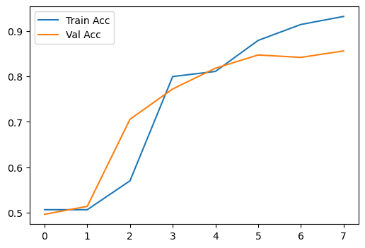
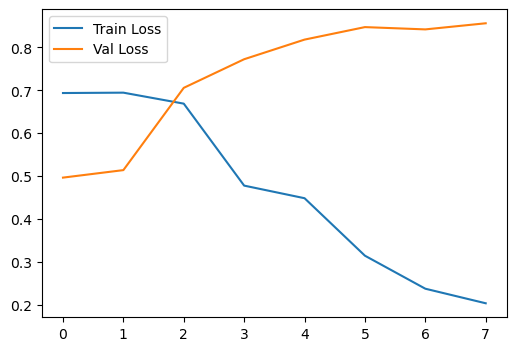

import pandas as pd
import numpy as np
import matplotlib.pyplot as plt
import seaborn as sns
import torch
from torch import nn
from torch.optim import Adam
from torch.utils.data import TensorDataset, DataLoader
import os
from tqdm import tqdm
tqdm.pandas()
from collections import CounterLMTM
## Sentimental Analysis
- many to one
- 영화 리뷰 텍스트(many)를 입력으로 받아 긍정 또는 부정(one)을 출력하는 구조
- Embedding: 영화 리뷰(text)를 벡터로 변환하는 연산
- LSTM: 시계열 데이터를 처리하기 위한 구조
- Linear: 결과 출력
Step 1 : Load libraries & Datsets
data = pd.read_csv('exercise4.csv')
data.head()| processed | label | |
|---|---|---|
| 0 | One reviewer mentioned watching Oz episode hoo... | 1 |
| 1 | A wonderful little production . The filming te... | 1 |
| 2 | I thought wonderful way spend time hot summer ... | 1 |
| 3 | Basically family little boy Jake think zombie ... | 0 |
| 4 | Petter Mattei Love Time Money visually stunnin... | 1 |
data['processed'][0]'One reviewer mentioned watching Oz episode hooked . They right , exactly happened . The first thing struck Oz brutality unflinching scene violence , set right word GO . Trust , show faint hearted timid . This show pull punch regard drug , sex violence . Its hardcore , classic use word . It called OZ nickname given Oswald Maximum Security State Penitentary . It focus mainly Emerald City , experimental section prison cell glass front face inwards , privacy high agenda . Em City home many . . Aryans , Muslims , gangsta , Latinos , Christians , Italians , Irish . . . . scuffle , death stare , dodgy dealing shady agreement never far away . I would say main appeal show due fact go show dare . Forget pretty picture painted mainstream audience , forget charm , forget romance . . . OZ mess around . The first episode I ever saw struck nasty surreal , I say I ready , I watched , I developed taste Oz , got accustomed high level graphic violence . Not violence , injustice crooked guard sold nickel , inmate kill order get away , well mannered , middle class inmate turned prison bitch due lack street skill prison experience Watching Oz , may become comfortable uncomfortable viewing . . . . thats get touch darker side .'data['processed'] = data['processed'].str.lower().replace(r"[^a-zA-Z ]", "", regex=True)data['processed'][0]'one reviewer mentioned watching oz episode hooked they right exactly happened the first thing struck oz brutality unflinching scene violence set right word go trust show faint hearted timid this show pull punch regard drug sex violence its hardcore classic use word it called oz nickname given oswald maximum security state penitentary it focus mainly emerald city experimental section prison cell glass front face inwards privacy high agenda em city home many aryans muslims gangsta latinos christians italians irish scuffle death stare dodgy dealing shady agreement never far away i would say main appeal show due fact go show dare forget pretty picture painted mainstream audience forget charm forget romance oz mess around the first episode i ever saw struck nasty surreal i say i ready i watched i developed taste oz got accustomed high level graphic violence not violence injustice crooked guard sold nickel inmate kill order get away well mannered middle class inmate turned prison bitch due lack street skill prison experience watching oz may become comfortable uncomfortable viewing thats get touch darker side '- 사전생성
- 리뷰 문장에 들어있는 단어들을 추출하고, 각각의 단어에 숫자를 부여하는 작업
- [‘one’, ‘reviewer’, ‘mentioned’, ‘watching’, ‘oz’, ‘episode’, ‘hooked’]
# 문장에 포함된 단어 토큰화
reviews = data['processed'].values
words = ' '.join(reviews).split()
words[:10]['one',
'reviewer',
'mentioned',
'watching',
'oz',
'episode',
'hooked',
'they',
'right',
'exactly']counter = Counter(words)
vocab = sorted(counter, key=counter.get, reverse=True)
int2word = dict(enumerate(vocab, 1))
int2word[0] = '<PAD>'
word2int = {word: id for id, word in int2word.items()}
#word2intword2int['<PAD>']0- 리뷰 인코딩
- 리뷰에 포함된 단어를 숫자형태로 변환하는 작업
- {‘i’: 1, ‘movie’: 2, ‘film’: 3, ‘the’: 4, ‘one’: 5, ‘like’: 6, ‘it’: 7, ‘time’: 8, ‘this’: 9, ‘good’: 10, ‘character’: 11,…}
reviews_enc = [[word2int[word] for word in review.split()] for review in tqdm(reviews)]100%|██████████████████████████████████████████████████████████████████████████| 50000/50000 [00:02<00:00, 24930.36it/s]reviews_enc[0][1:10][1095, 972, 74, 2893, 186, 2982, 119, 114, 538]data['processed'][0]'one reviewer mentioned watching oz episode hooked they right exactly happened the first thing struck oz brutality unflinching scene violence set right word go trust show faint hearted timid this show pull punch regard drug sex violence its hardcore classic use word it called oz nickname given oswald maximum security state penitentary it focus mainly emerald city experimental section prison cell glass front face inwards privacy high agenda em city home many aryans muslims gangsta latinos christians italians irish scuffle death stare dodgy dealing shady agreement never far away i would say main appeal show due fact go show dare forget pretty picture painted mainstream audience forget charm forget romance oz mess around the first episode i ever saw struck nasty surreal i say i ready i watched i developed taste oz got accustomed high level graphic violence not violence injustice crooked guard sold nickel inmate kill order get away well mannered middle class inmate turned prison bitch due lack street skill prison experience watching oz may become comfortable uncomfortable viewing thats get touch darker side 'word2int['one'], word2int['reviewer'], word2int['mentioned'](5, 1095, 972)data['encoded'] = reviews_enc
data['encoded']0 [5, 1095, 972, 74, 2893, 186, 2982, 119, 114, ...
1 [45, 311, 53, 247, 4, 1270, 1633, 16086, 78, 8...
2 [1, 97, 311, 28, 1053, 8, 763, 1343, 2345, 112...
3 [591, 130, 53, 221, 3123, 33, 565, 3653, 608, ...
4 [57645, 9676, 39, 8, 203, 1993, 1312, 3, 37, 3...
...
49995 [1, 97, 2, 114, 10, 191, 7, 1413, 128, 26, 913...
49996 [22, 40, 22, 307, 22, 50, 2847, 869, 545, 1364...
49997 [1, 3168, 4064, 34678, 7571, 269, 4234, 4064, ...
49998 [1, 86, 2839, 825, 369, 348, 9292, 5, 9, 208, ...
49999 [264, 5, 5445, 109, 1941, 2, 213, 328, 123, 44...
Name: encoded, Length: 50000, dtype: object- 길이 맞춰주기(padding or trim)
- 신경망의 입력으로 사용하기 위해 일정 길이만큼 맞춰주는 작업
- 길이가 긴 문장은 잘라주고(trim), 길이가 짧은 문장은 채워주는(padding) 작업
def pad_features(reviews, pad_id, seq_length=128):
features = np.full((len(reviews), seq_length), pad_id, dtype=int)
for i, row in enumerate(reviews):
features[i, :len(row)] = np.array(row)[:seq_length]
return features
seq_length = 256
features = pad_features(reviews_enc, pad_id=word2int['<PAD>'], seq_length=seq_length)
assert len(features) == len(reviews_enc)
assert len(features[0]) == seq_lengthnp.full((5,3),2)array([[2, 2, 2],
[2, 2, 2],
[2, 2, 2],
[2, 2, 2],
[2, 2, 2]])word2int['<PAD>']0labels = data['label'].to_numpy()
labelsarray([1, 1, 1, ..., 0, 0, 0])- 데이터 분할
# train test split
train_size = .8
split_id = int(len(features) * train_size)
train_x, test_x, train_y, test_y = features[:split_id], features[split_id:], labels[:split_id], labels[split_id:]
split_id = int(len(train_x) * train_size)
train_x, valid_x, train_y, valid_y = train_x[:split_id], train_x[split_id:], train_y[:split_id], train_y[split_id:]
print('Train X shape: {}, Valid X shape: {}, Test X shape: {}'.format(train_x.shape, valid_x.shape, test_x.shape))
print('Train y shape: {}, Valid y shape: {}, Test y shape: {}'.format(train_y.shape, valid_y.shape, test_y.shape))Train X shape: (32000, 256), Valid X shape: (8000, 256), Test X shape: (10000, 256)
Train y shape: (32000,), Valid y shape: (8000,), Test y shape: (10000,)Step 2 : Create DataLoader
# set hyperparameter
device = torch.device('cuda' if torch.cuda.is_available() else 'cpu')
print(device)
lr = 0.001
batch_size = 128
vocab_size = len(word2int)
embedding_size = 256
dropout = 0.25
epochs = 8
history = {
'train_loss': [],
'train_acc': [],
'val_loss': [],
'val_acc': [],
'epochs': epochs
}
es_limit = 5cudatrainset = TensorDataset(torch.from_numpy(train_x), torch.from_numpy(train_y))
validset = TensorDataset(torch.from_numpy(valid_x), torch.from_numpy(valid_y))
testset = TensorDataset(torch.from_numpy(test_x), torch.from_numpy(test_y))
trainloader = DataLoader(trainset, shuffle=True, batch_size=batch_size)
valloader = DataLoader(validset, shuffle=True, batch_size=batch_size)
testloader = DataLoader(testset, shuffle=True, batch_size=batch_size)Step 3 : Set Network Structure
class LSTMClassifier(nn.Module):
def __init__(self, vocab_size, embedding_size=400):
super(LSTMClassifier, self).__init__()
self.embedding = nn.Embedding(vocab_size, embedding_size)
self.lstm = nn.LSTM(embedding_size, 512, 2, dropout=0.25, batch_first=True)
self.dropout = nn.Dropout(0.3)
self.fc = nn.Linear(512, 1)
self.sigmoid = nn.Sigmoid()
def forward(self, x):
x = x.long()
x = self.embedding(x)
o, _ = self.lstm(x)
o = o[:, -1, :]
o = self.dropout(o)
o = self.fc(o)
o = self.sigmoid(o)
return oStep 4 : Create Model instance
model = LSTMClassifier(vocab_size, embedding_size).to(device)
print(model)LSTMClassifier(
(embedding): Embedding(96140, 256)
(lstm): LSTM(256, 512, num_layers=2, batch_first=True, dropout=0.25)
(dropout): Dropout(p=0.3, inplace=False)
(fc): Linear(in_features=512, out_features=1, bias=True)
(sigmoid): Sigmoid()
)Step 5 : Model compile
criterion = nn.BCELoss()
optim = Adam(model.parameters(), lr=lr)Step 6 : Set train loop
def train(model, trainloader):
model.train()
train_loss = 0
train_acc = 0
for id, (X, y) in enumerate(trainloader):
X, y = X.to(device), y.to(device)
optim.zero_grad()
y_pred = model(X)
loss = criterion(y_pred.squeeze(), y.float())
loss.backward()
optim.step()
train_loss += loss.item()
y_pred = torch.tensor([1 if i == True else 0 for i in y_pred > 0.5], device=device)
equals = y_pred == y
acc = torch.mean(equals.type(torch.FloatTensor))
train_acc += acc.item()
history['train_loss'].append(train_loss / len(trainloader))
history['train_acc'].append(train_acc / len(trainloader))
return train_loss, train_accStep 7 : Set test loop
def validation(model, valloader):
model.eval()
val_loss = 0
val_acc = 0
with torch.no_grad():
for id, (X,y) in enumerate(valloader):
X, y = X.to(device), y.to(device)
y_pred = model(X)
loss = criterion(y_pred.squeeze(), y.float())
val_loss += loss.item()
y_pred = torch.tensor([1 if i == True else 0 for i in y_pred > 0.5], device=device)
equals = y_pred == y
acc = torch.mean(equals.type(torch.FloatTensor))
val_acc += acc.item()
history['val_loss'].append(val_loss / len(valloader))
history['val_acc'].append(val_acc / len(valloader))
return val_loss, val_acc
Step 8 : Run Model
# train loop
epochloop = tqdm(range(epochs), desc='Training')
# early stop trigger
es_trigger = 0
val_loss_min = torch.inf
for e in epochloop:
train_loss, train_acc = train(model, trainloader)
val_loss, val_acc = validation(model, valloader)
epochloop.write(f'Epoch[{e+1}/{epochs}] Train Loss: {train_loss / len(trainloader):.3f}, Train Acc: {train_acc / len(trainloader):.3f}, Val Loss: {val_loss / len(valloader):.3f}, Val Acc: {val_acc / len(valloader):.3f}')
# save model if validation loss decrease
if val_loss / len(valloader) <= val_loss_min:
torch.save(model.state_dict(), './sentiment_lstm.pt')
val_loss_min=val_loss / len(valloader)
es_trigger = 0
else:
es_trigger += 1
# early stop
if es_trigger >= es_limit:
epochloop.write(f'Early stopped at Epoch-{e+1}')
history['epochs'] = e+1
breakTraining: 0%| | 0/8 [00:12<?, ?it/s]Training: 25%|██████████████████▊ | 2/8 [00:23<01:10, 11.75s/it]Training: 25%|██████████████████▊ | 2/8 [00:32<01:10, 11.75s/it]Training: 38%|████████████████████████████▏ | 3/8 [00:42<00:53, 10.67s/it]Training: 50%|█████████████████████████████████████▌ | 4/8 [00:51<00:40, 10.24s/it]Training: 62%|██████████████████████████████████████████████▉ | 5/8 [01:01<00:29, 9.82s/it]Training: 88%|█████████████████████████████████████████████████████████████████▋ | 7/8 [01:11<00:09, 9.95s/it]Training: 100%|███████████████████████████████████████████████████████████████████████████| 8/8 [01:21<00:00, 10.20s/it]Epoch[1/8] Train Loss: 0.694, Train Acc: 0.506, Val Loss: 0.692, Val Acc: 0.496
Epoch[2/8] Train Loss: 0.694, Train Acc: 0.506, Val Loss: 0.692, Val Acc: 0.514
Epoch[3/8] Train Loss: 0.669, Train Acc: 0.570, Val Loss: 0.650, Val Acc: 0.706
Epoch[4/8] Train Loss: 0.478, Train Acc: 0.800, Val Loss: 0.601, Val Acc: 0.772
Epoch[5/8] Train Loss: 0.448, Train Acc: 0.811, Val Loss: 0.405, Val Acc: 0.818
Epoch[6/8] Train Loss: 0.314, Train Acc: 0.879, Val Loss: 0.357, Val Acc: 0.847
Epoch[7/8] Train Loss: 0.237, Train Acc: 0.914, Val Loss: 0.384, Val Acc: 0.842
Epoch[8/8] Train Loss: 0.203, Train Acc: 0.932, Val Loss: 0.426, Val Acc: 0.856# plot loss
plt.figure(figsize=(6,4))
plt.plot(range(history['epochs']), history['train_acc'][:history['epochs']], label='Train Acc')
plt.plot(range(history['epochs']), history['val_acc'][:history['epochs']], label='Val Acc')
plt.legend()
plt.show()
# plot loss
plt.figure(figsize=(6,4))
plt.plot(range(history['epochs']), history['train_loss'][:history['epochs']], label='Train Loss')
plt.plot(range(history['epochs']), history['val_acc'][:history['epochs']], label='Val Loss')
plt.legend()
plt.show()